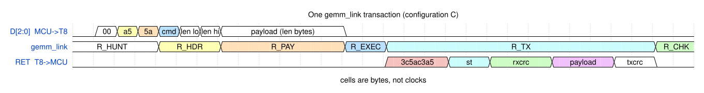

fpga-open-vocab: describe it,
and a $50 board spots it
- 00Who's talking2 min
- 01What is fpga-open-vocab4 min
- 02The technology stack12 min
- 03Architecture deep-dive11 min
- 043,359 ms → 270 ms7 min
- 05From 512 floats to an answer7 min
- 06Frictions & learnings5 min
- 07Wrap-up + Q&A2 min

- Talks, demos, and a lot of sample code — mostly about AI
- fpga-open-vocab is a personal side project: an FPGA board that answers questions about what it can see, with no cloud and no GPU
- Its sibling project, an FPGA synthesizer, is at
github.com/kazunori279/xls32-fpga-synth
An image-query appliance: point it at something, type "a person smiling", and it answers.
- Runs a distilled CLIP-style image encoder — 1.40 M int4 parameters, 159 MMAC per frame
- On a ~$50 Forgix board: an RP2354A MCU beside an Efinix Trion T8 FPGA
- All eight convolution layers execute in the fabric, off a live camera
- 282 ms per camera frame — 265 ms of it the encoder — and bit-exact: 512 of 512 embedding floats identical to the plain-C reference
- 5.97× the same model on the MCU alone — both measured in one boot, both at 320 MHz
No cloud, no GPU, no network. The answer comes out on an RGB LED, so the laptop can be unplugged once it is running.
# rank four phrases against every frame uv run host/demo.py "cup" "person" "book" "laptop" # one thing *as against* the others ./ab.sh "an opened book" "a closed book" --enrol
What you see in the room: the LED sits green on an empty desk, swings toward red the moment the described thing comes into shot, and holds there — it measures presence, not change.
What you see on the console: per-frame cosines, z-scores, the winning query, and the frame time in milliseconds.
A new question can be sent to a running board with no reflash — the weights never change, only the six vectors they are compared against.
In M9's first demo, book swung from last place to first in the
single frame the book came back into shot.
It only ever sees 512 floats and an image CLIP's two towers emit into one shared space, so the language half can run anywhere — and the only half that has to be on the device is the one that runs once per frame instead of once per query. Everything in this talk is a consequence of that asymmetry.
CLIP is arXiv 2103.00020 (OpenAI, 2021). The teacher used here is SigLIP 2 SO400M — same idea, a sigmoid loss instead of a softmax over the batch, and a much stronger reading of word order.
The student sees the same images and is trained to reproduce the teacher's 512-d output. What it inherits is the embedding space — which is exactly what the text side needs it to share.
1.40 M parameters · 159 MMAC · eight 3×3 conv stages, under a 1.5 M / 250 MMAC budget set by the board.
M4 measured the student retaining 94% of the queries the original teacher itself gets right. After the teacher swap and int4 weights, 91%.
Quantization is nearly free: the exported int8 model scores 0.896 against fp32's 0.892 on the task — not worse, which is the only claim worth making.
The teacher changed mid-project — CLIP ViT-B/16 → SigLIP 2 SO400M, squeezed 1152-d → 512-d by a frozen PCA. Both spaces are 512-d, so pairing a query from one with a student from the other scores instead of failing. No exception. No NaN.
Guard: an export.json names the space beside the weights, and the
board prints a crc32 of the weights it is actually running so a stale flash is refused
before a query is sent.
Logic elements (a small lookup table plus a flip-flop), a routing fabric between them, a handful of hard multipliers, and some block RAM. You compile a hardware description into a bitstream that configures all of it.
It has no instruction pointer. Everything you describe happens every clock, at once.
A convolution is a wall of independent int8 multiply-accumulates. A CPU does them one or two at a time; the fabric does sixteen every clock, for as long as you can feed it.
And it is deterministic — the same 174 blocks take the same number of cycles every frame, which is what makes "bit-exact against a C reference" a testable claim.
7,384 logic elements. Eight 18×18 multipliers. 24 blocks of 5 kbit — 15.4 KB of on-chip memory, total. A mid-range FPGA has a hundred times that.
The design uses 6,265 LE (85%), 8 of 8 multipliers, and 21 of 24 memory blocks (88%). It started at 33% of the logic and memory was the only thing running out; three milestones of arithmetic later, both are nearly full.
| What it is | Why it matters here | |
|---|---|---|
| MCU | RP2354A — 2 × Cortex-M33, 520 KB SRAM, 2 MB stacked flash | The flash holds 768 KB of int4 weights + a 173 KB bitstream. Everything is resident; nothing streams |
| FPGA | Efinix Trion T8F49 — 7,384 LE, 8 hard multipliers, 15.4 KB BRAM | Uses 6,265 LE (85%), 8/8 multipliers, 21/24 memory blocks. Both are nearly spent |
| The link | 3 bits out, 1 bit back. 26.4 MB/s forward, 8.9 MB/s back — measured | The netlist allows no wider run anywhere. Asymmetric by construction, which suits an accelerator |
| Clocks | 320 MHz sys / 160 MHz link, bit-exact there. 340 is not a higher setting to try — the link stops answering | link_clk = sys_clk / 2 is hard-tied, and the MCU is the tile's only clock — one knob moves everything |
| Camera | ArduCam Mega 3MP over SPI, six wires to the header | Native 128 × 128 costs 0.001 mean AUC against the training framing — the model sees what it was trained on |
| Output | One RGB LED, plus a serial log | The whole point of an appliance: it answers with the host unplugged |
| Price | ~$50, one board, off the shelf | No GPU, no cloud, no network. That constraint is the project |
Runs the teacher's text tower, once per query. Pushes 512 floats and the bitstream over USB.
It is also the only place the model is trained, quantized and exported — and it can be unplugged afterwards.
Owns the wire. Stages each block, drives the link with PIO + DMA, checksums as the bytes go past, and decodes what comes back.
Also the tile's only clock — the fabric ticks when core 0 pushes a bit and not otherwise.
Builds the next block's weights and input strips, and scatters results back into the activation buffer — over two lock-free rings.
509 ms of work per frame that mostly hides inside the wire's shadow. Only what does not fit shows up as stall.
2,048 int32 accumulators, 16 MACs per clock — eight hard multipliers and, since M16, eight more built out of logic. Plus int4 unpacking (M14) and the requantize epilogue (M15).
It holds no model. It is a very fast, very small dot-product engine that is handed operands and asked for sums.
in_scale, round, clip to ±127.
conv0 is the only stage that ever sees signed input.int64 creeps into the expression. And
conv7 emits float rather than codes: its output is only 16 KB, and quantizing
immediately before an average pool would wash the codes out anyway.A conv layer is far too big for 15.4 KB of block RAM. So the MCU cuts it into pieces the tile can hold and streams them past.
- The tile holds 2,048 int32 accumulators and a 2 KB slice of input — that is the entire working set
- One frame becomes 174 blocks, 1,856 passes and 6,264 transactions
- Four command types per block: ACT (push activations), WGT (push weights), RUN (compute — carries no data at all), DRAIN (read the answers back)
Weights are resident, not streamed. All 768 KB live in the MCU's flash and are pushed as the schedule needs them. The alternative — a big model in external memory — is the option that does not exist on this board.
Since M15 the tile requantizes internally and DRAIN returns
one byte per accumulator instead of four, which took the return path from 153 ms to
41 ms on the board.
- M0 extracted the pin map from the vendor's KiCad source. Only 6 header pins reach the MCU, 13 GPIO are unbonded, and the widest contiguous run anywhere is 3 bits
- The return path is 1 bit and cannot be widened: GPIO5 is
CDONEand GPIO7 has no pad, so GPIO6 has no neighbour - One soldered jumper moved the clock out of the data pins, buying the third data bit and the only clock-capable ball the MCU can reach
- Measured: 26.4 MB/s forward (1.6% under the computed ceiling) and 8.9 MB/s back
The asymmetry is a feature. It suits an accelerator that is fed weights and activations and asked for a much smaller answer — and it is why the design pushes whole layers rather than shuttling operands.
Half of the wire time is the tile computing, not bytes moving. That is why raising the link clock bought far more than the byte rate alone predicted.
| Signal | Bits | Rate |
|---|---|---|
| MCU → FPGA | 3 | 26.4 MB/s |
| FPGA → MCU | 1 | 8.9 MB/s |
| Clock | 1 | PIO side-set — the MCU is the tile's only clock |
DRAIN returns a byte per accumulator
instead of four.

A two-byte preamble a5 5a, then cmd and a
16-bit length. The receiver hunts for the preamble, so a resync costs one transaction rather
than a reset.
R_HUNT → R_HDR → R_PAY → R_EXEC → R_WAIT → R_TX → R_CHK.
R_WAIT exists for RUN alone — the one command that carries no payload
and takes all the time.
A CRC over the payload each direction, plus a status byte. Every "bit-exact" claim in this talk is 512 of 512 floats on top of zero non-exact transactions.
RUN
is the only row that is arithmetic, and everything else is moving bytes to feed it.firmware/encoder.c, and every "×" is
against the same model on the MCU alone — re-measured in the same boot, never against a
remembered constant.| Milestone | What changed | Frame | vs MCU |
|---|---|---|---|
| baseline | The student on the MCU alone, hand-tuned C, no FPGA | 3,359 ms | 1.00× |
| M7c | A whole frame on the tile — 174 blocks, 8 layers, 512/512 floats exact | 2,164 ms | 1.62× |
| M7d | DMA moves the bytes and the sniffer hashes them, so the checksum is free | 1,481 ms | 2.35× |
| M7e | Weight builds and scatter handed to core 1 over a lock-free ring | 1,292 ms | 2.71× |
| M7f/g | Two rings, the hot path off XIP flash, and the jumper soldered | 975 ms | 3.54× |
| M7h/i | Cache the weight build; one instruction each for round and clamp | 851 ms | 3.94× |
| M14 | int4 weights — two per byte on the wire, one runtime config bit | 798 ms | 4.32× |
| M15 | Requantize inside the tile — DRAIN returns 1 byte, not 4 | 631 ms | 5.46× |
| M16 | Pair kernel taps on kx: nine sweeps per channel block become six | 569 ms | 6.05× |
| the clock | No RTL at all. 150 → 220 → 280 → 320 MHz sys / 160 MHz link | 270 ms | 12.76× |
m7 harness, which runs no camera, and every
ratio is against encoder_fast measured in the same boot — but the last row is not
one clock: m7 takes its MCU baseline at its 150 MHz boot rate and then runs the
ladder up. At one clock the appliance is 5.97×. Its camera frame is 282 ms today —
the last 56 ms of that came off by overlapping the capture with the compute, and 80 more by
switching on the M15 epilogue nobody had noticed was off.conv0 and the head stay 8-bit, which is why the ratio is 0.547
and not 0.5. The multiplier never finds out.At the write port, not at the multiplier. Two weights per byte, low nibble
first, sign-extended to 8 bits on the way into wbuf.
Low-nibble-first is not a convention, it is what makes byte b land on
lanes 2b and 2b+1 with no shuffle — the tile already reads
wreg[4*j +: 4]. Storage stays 8 bits wide, so wreg, the fan-out and
the multiplier operand are bit-for-bit what M6b built. The Logic-Level-0 path M10
measured never moved.
Same 10×8 DSP, same shape, identical product — so tb_gemm's golden
values needed no separate arm and no wire format moved.
cfg_w4 is a runtime input per block, not a bitstream
parameter — --ends8 pins conv0 to 8 bits while frame.c
runs all eight convolutions on one tile, so both widths have to be live at once. Width belongs
to the exported blob (d->wbits), never to the host.
Weight payload 2,230,272 → 1,142,784 B a frame. WGT 6.66 → 3.76
Mclk; ACT, RUN and DRAIN identical to the digit,
which is what says only the width moved.
121 ms of frame in configuration A, 35 in C — the narrow link is where it pays, because what it deletes is wire bytes. The 2.90 Mclk over 1,087,488 bytes is 2.667 clocks per byte, which is 8 bits over three data lines exactly. Nothing is unaccounted for.
- M7d left 563 ms of CPU outside the wire it thought it had covered
- M7e projected 380 ms from the second core and got 193 — work already hidden in a DMA window costs nothing whichever core runs it
- M7f moved 157 ms off core 0 and bought 59, with 101 coming back as stall behind one FIFO
- the jumper saved 286 ms of wire and 0 ms of frame, until three reasons were found and 165 recovered
- M10 was scoped around ~450 ms and measured 32 — so it was closed without being built
- M7i converted at 79%, and the reason proves the rule: all 84 ms came out of the one queue whose overruns become core 0's stall instead of hiding in the wire's shadow. The same 84 ms taken from the other queue would have collected far less
- M16 converted at 100% and 66% simultaneously, same board, same run, same 16.30 Mclk in the tile. What differed is what was standing behind it — the faster link configuration runs out of shadow first
- A component cost is worth face value only if something is actually waiting on it. Core 1 spends 82 ms building weights, but it is only 56% busy — core 0 waits about 20 ms, not 82. Two milestones were planned against a cost nothing was blocked on
cannot find a ceiling —
it can only confirm the rung it starts on Every clock sweep in this project descended from 150 MHz and stopped at the first rung that passed. So the logs said "bit-exact at 75.0 MHz" and everyone read "bit-exact up to 75.0 MHz". Two milestones' worth of plans were written around a limit that had never been measured — including one milestone's own statement that the tile "is the one line no link change can touch". Asking for more got 280 MHz sys / 140 MHz link, three boots, every cycle count identical to the digit. Worth auditing anywhere a measured pass has been quietly read as a measured bound.
Not one bad rung but two contiguous bands — link 39–41 and 122–130 MHz — with passing rates on both sides of each, in three boots.
They are spaced 86 MHz apart, which is a round-trip delay of τ = 11.7 ns. Their widths grow linearly with frequency, exactly as a fixed setup-and-hold window must.
Solving each band separately for that window gives 0.73 ns and 0.83 ns — two measurements 13% apart, from data that never touched each other.
Sweeping core voltage moves the band +1 MHz per 0.05 V, upward, exactly as faster silicon and a smaller τ require. Cold versus warm shows nothing.
344 MHz sys / 172 MHz link is bit-exact — the Trion closing paths at 2.65× its signed-off Fmax — and 348 hangs the MCU with no link error, so it is the core, not the fabric.
Bit-exact to 344 at 1.30 V, 340 at 1.25, 332 at 1.20, 312 at 1.15.
Not one non-exact transaction at any rail — every failure up there is the core going
quiet. This is an m6 sweep, and it does not transfer — the appliance ships
320 MHz at 1.25 V, wedges unrecoverably at 1.15, and its link is dead at the 340 this
table calls bit-exact.
The encoder is finished and bit-exact, and the board still cannot answer a question. Three reasons, all of them measured on the bench:
- 0.27 is large for one phrase and small for another. There is no shared scale across queries
- This room is not the dataset. Across five bench scenes — a whiteboard, a book's
two covers, a wine glass, a covered lens — the query
laptopled every one of them on the raw cosine, with no laptop anywhere in shot - A device pointed at a desk drifts. 500 static frames: all four queries fall together by ~1.5 z over four minutes as the camera's own exposure creeps
Why the room wins: the training negatives are averaged over fields and food and dogs, while every frame this camera has ever taken is an indoor desk in front of a window. The residue is a property of the room — and the room is the only place it can be measured.
// the score is not the cosine z[i] = (cos[i] − qbg[i]) / bg_spread(i);
| Freeze? | What it measures |
|---|---|
| yes (default) | Presence. "Has this state appeared, and is it still there" — right for a fixed installation |
| no | Change. Leave the same book in shot and it becomes the background — which, on an LED, looks exactly like a bug |
level = mean(z) // is anything here at all? c[i] = z[i] − level // and which one of them?
Drift lives in the common mode. Subtracting level removes it from the
state decision for any query count — the way differencing two queries removes it for
two. Worth 44.2 → 84.2% and 87.5 → 95.8% on the two recorded runs.
And level is exactly what the centring throws away — which is why it
becomes the presence axis rather than a third enrolled class. Enrolling "absent" as a class
instead scores 42.3% and 73.1%.
Enrolment. Press '0' for the empty scene and '1'…'6'
for each class. The board averages 20 frames of c[] and of
level and keeps them as references.
| Frames averaged | 1 | 5 | 12 | 16 | 20 |
|---|---|---|---|---|---|
| held out | 90.0 | 89.2 | 96.7 | 99.2 | 100.0 % |
Presence, with two edges. The frame's level is placed on the enrolled
span as a fraction — 0 where empty read, 1 where the objects did — and the span is
signed, because the direction is the enrolment's to state, not the code's to assume.
| enter | leave | held out | false fire |
|---|---|---|---|
| 0.50 | 0.50 | 101/120 — 84.2% | 0/26 |
| 0.50 | 0.25 | 105/120 — 87.5% | 0/26 |
| 0.50 | 0.15 | 120/120 — 100.0% | 0/26 |
against 90 / 180 for ranking the same frames And 90/180 is the number that makes the point. On that run "an opened book" scores higher than "a closed book" in all six segments, so a rule with no learned reference answers "opened" every time — and is right exactly half of it. The difference between the two columns is a per-scene offset of ~1.7 that a learned reference measures and a fixed rule cannot absorb. The honest gap: the presence stage's benefit is still unmeasured, because the only empty desk in the bench schedule runs before the rule engages.
DesignAPI.create(). So the repo carries
rtl/mk_peri.py, which writes the file itself from the interface source, because a
build that needs a mouse cannot run in a container.0x… against an upper-cased
0X…, so it refused a board that matched. Fail-closed, so nothing wrong
shipped — but a check that cannot pass is not a check, and all four offline tests had
exercised only the mismatch path.- A component saving is worth face value only until it uncovers the next thing — and a component cost only if something is actually waiting on it. Nothing here is claimed until it is measured in the same boot as its control
- "Bit-exact at 75 MHz" was read as "bit-exact up to 75 MHz" for three milestones. A ladder that only steps down can only confirm the rung it starts on — the single largest speed-up in the project was sitting there the whole time
- A clean, falsifiable, published explanation of the dead band was refuted by the next sweep. A hole in a coarse sweep is not a hole until the sweep is fine enough to see its edges — and the finer sweep turned a bug report into τ = 11.7 ns
- Two different 512-d embedding spaces cannot be told apart by a type system. A wrong pairing scores instead of failing — so the space is named in the export and the board prints a crc32 of the weights it is actually running
- 01CLIP's two towers are separable — only the image half has to be on the device
- 02A 1.40 M-parameter student fits in $50 of silicon and keeps 91% of the teacher's queries
- 03On an FPGA this small, memory runs out before logic does — 21 of 24 blocks, 33% of the LEs
- 04Measure the frame, not the component — and re-measure the baseline in the same boot
- 05A measured pass is not a measured bound. The biggest win had no design work in it
- 06Getting the embedding right was the easy half; turning it into a verdict took thirteen milestones
README.md— what it is, where it stands, and how to run it in four commandsdocs/architecture.md— the board, the model, the link, the two cores, the decision ruledocs/building.md— toolchain, firmware, bitstream, flashing, every harnessdocs/history.md— the timeline, the frictions, the rejected designs, the learnings
docs/milestones.md— M0 through M21, append-only, including the projections that were wrongdocs/bring-up-log.md— dated bench entries, several of which exist only to record a claim that later turned out to be false
- CLIP — arxiv.org/abs/2103.00020 · SigLIP 2 — the teacher since M18
- Forgix — forgix.tech · Efinix Trion T8 & Efinity · Raspberry Pi RP2350
- Sibling project: github.com/kazunori279/xls32-fpga-synth
Thank you
Questions?